Transfer Assembly (4WD) Reassembly |
| 1. Install Transfer Case Breather Plug |
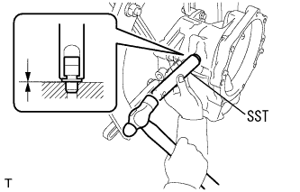 |
Using SST, tap in a new breather plug until it contacts the transfer case.
| 2. Install Breather Oil Deflector |
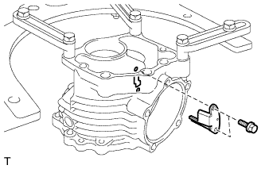 |
Install a new breather oil deflector to the transfer case with the 2 bolts.
| 3. Install Transfer Ring Gear Mounting Case |
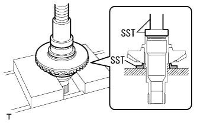 |
Using SST and a press, press the transfer ring gear mounting case into the transfer ring gear.
| 4. Install Shaft Snap Ring |
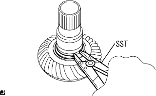 |
Using SST, install a new shaft snap ring.
| 5. Install Ring Gear Mounting Case Bearing |
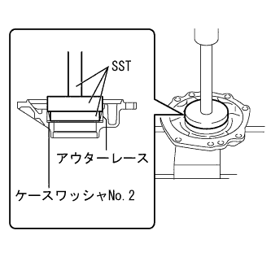 |
Install new ring gear mounting case washer No.2 to transfer case cover No.1.
Using SST and a press, press the ring gear mounting case bearing (outer race) into transfer case cover No.1.
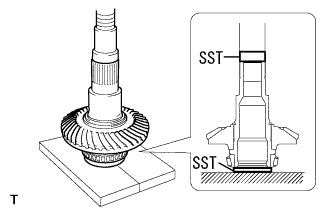 |
Using SST and a press, press the ring gear mounting case bearing (inner race) onto the transfer ring gear mounting case.
Apply hypoid gear oil SX to the mounting case bearing.
| 6. Install Ring Gear Mounting Case Bearing |
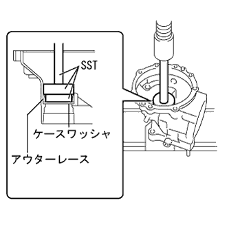 |
Install a new transfer ring gear mounting case washer to the transfer case.
Using SST and a press, press the ring gear mounting case bearing (outer race) into the transfer case.
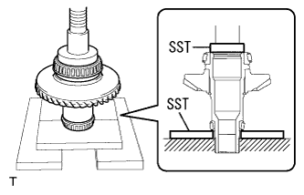 |
Using SST and a press, press the ring gear mounting case bearing (inner race) onto the transfer ring gear mounting case.
Apply hypoid gear oil SX to the mounting case bearing.
| 7. Install Transfer Output Shaft Washer |
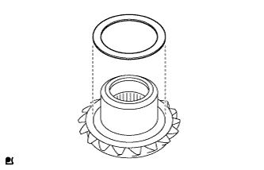 |
Install the transfer output shaft washer to the transfer driven pinion.
| 8. Install Transfer Driven Pinion Bearing FR |
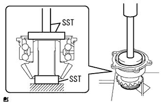 |
Using SST and a press, press the transfer driven pinion bearing FR onto the transfer driven pinion.
| 9. Install Transfer Output Rear Shaft Dust Deflector |
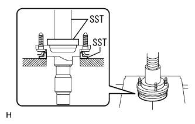 |
Using SST and a press, press the transfer output rear shaft dust deflector onto the transfer output shaft.
| 10. Install Transfer Driven Pinion |
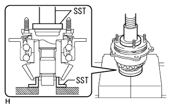 |
Using SST and a press, press the transfer driven pinion onto the transfer output shaft.
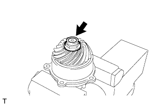 |
Secure the output shaft in a vise between aluminum plates.
Using a socket wrench (30mm), install a new transfer gear nut to the output shaft.
| 11. Install Transfer Output Shaft |
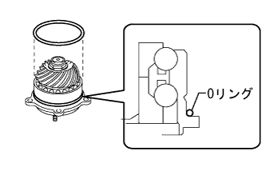 |
Install a new O-ring to the transfer driven pinion.
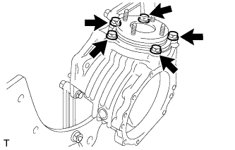 |
Install the transfer output shaft to the transfer case with the 5 bolts.
| 12. Inspect Driven Pinion Preload |
 |
Install the nut to the stud bolt.
Using a torque wrench, inspect the turning torque of the driven pinion (driven pinion preload).
| 13. Install Transfer Ring Gear |
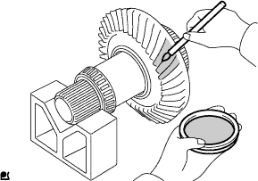 |
Apply a thin, even coat of red lead to all teeth on both sides of the transfer ring gear tooth surfaces.
 |
Install the transfer ring gear to the transfer case.
| 14. Install Transfer Case Cover NO.1 |
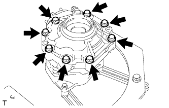 |
Install the transfer case cover No.1 to the transfer case with the 8 bolts.
| 15. Adjust Backlash |
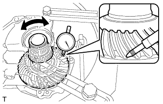 |
Insert a dial indicator through the transfer case plug No.2 hole and place it perpendicular to the tip of the ring gear tooth surface.
While holding the transfer output shaft by hand, turn the transfer ring gear mounting case back and forth by hand to measure the backlash between the ring gear and driven pinion.
If the result is not as specified, select a ring gear mounting case washer (for backlash adjustment) and transfer ring gear mounting case washer No.2 (for preload adjustment) from the table, and reinstall them to bring the value within the specification.
| Backlash Small | Backlash Large | |
|---|---|---|
| Case Washer (for Backlash Adjustment) | Thicker | Thinner |
| Case Washer No.2 (for Preload Adjustment) | Thinner | Thicker |
| Part No. | Thickness [mm] | Identification Mark |
|---|---|---|
| 36265-52010 | 1.97 | A0 |
| 36265-52020 | 1.99 | A1 |
| 36265-52030 | 2.01 | A2 |
| 36265-52040 | 2.03 | A3 |
| 36265-52050 | 2.05 | A4 |
| 36265-52060 | 2.07 | A5 |
| 36265-52070 | 2.09 | A6 |
| 36265-52080 | 2.11 | A7 |
| 36265-52090 | 2.13 | A8 |
| 36265-52100 | 2.15 | A9 |
| 36265-52110 | 2.17 | B0 |
| 36265-52120 | 2.19 | B1 |
| 36265-52130 | 2.21 | B2 |
| 36265-52140 | 2.23 | B3 |
| 36265-52150 | 2.25 | B4 |
| 36265-52160 | 2.27 | B5 |
| 36265-52170 | 2.29 | B6 |
| 36265-52180 | 2.31 | B7 |
| 36265-52190 | 2.33 | B8 |
| 36265-52200 | 2.35 | B9 |
| 36265-52210 | 2.37 | C0 |
| 36265-52220 | 2.39 | C1 |
| 36265-52230 | 2.41 | C2 |
| 36265-52240 | 2.43 | C3 |
| 36265-52250 | 2.45 | C4 |
| 36265-52260 | 2.47 | C5 |
| 36265-52270 | 2.49 | C6 |
| 36265-52280 | 2.51 | C7 |
| 36265-52290 | 2.53 | C8 |
| 36265-52300 | 2.55 | C9 |
| 36265-52310 | 2.57 | D0 |
| 36265-52320 | 2.59 | D1 |
| 36265-52330 | 2.61 | D2 |
| 36265-52340 | 2.63 | D3 |
| 36265-52350 | 2.65 | D4 |
| 36265-52360 | 2.67 | D5 |
| 36265-52370 | 2.39 | D6 |
| 36265-52380 | 2.71 | D7 |
| 36265-52390 | 2.73 | D8 |
| 36265-52400 | 2.75 | D9 |
| Part No. | Thickness [mm] | Identification Mark |
|---|---|---|
| 36266-52010 | 1.18 | A0 |
| 36266-52020 | 1.20 | A1 |
| 36266-52030 | 1.22 | A2 |
| 36266-52040 | 1.24 | A3 |
| 36266-52050 | 1.26 | A4 |
| 36266-52060 | 1.28 | A5 |
| 36266-52070 | 1.30 | A6 |
| 36266-52080 | 1.32 | A7 |
| 36266-52090 | 1.34 | A8 |
| 36266-52100 | 1.36 | A9 |
| 36266-52110 | 1.38 | B0 |
| 36266-52120 | 1.40 | B1 |
| 36266-52130 | 1.42 | B2 |
| 36266-52140 | 1.44 | B3 |
| 36266-52150 | 1.46 | B4 |
| 36266-52160 | 1.48 | B5 |
| 36266-52170 | 1.50 | B6 |
| 36266-52180 | 1.52 | B7 |
| 36266-52190 | 1.54 | B8 |
| 36266-52200 | 1.56 | B9 |
| 36266-52210 | 1.58 | C0 |
| 36266-52220 | 1.60 | C1 |
| 36266-52230 | 1.62 | C2 |
| 36266-52240 | 1.64 | C3 |
| 36266-52250 | 1.66 | C4 |
| 36266-52260 | 1.68 | C5 |
| 36266-52270 | 1.70 | C6 |
| 36266-52280 | 1.72 | C7 |
| 36266-52290 | 1.74 | C8 |
| 36266-52300 | 1.76 | C9 |
| 36266-52310 | 1.78 | D0 |
| 36266-52320 | 1.80 | D1 |
| 36266-52330 | 1.82 | D2 |
| 36266-52340 | 1.84 | D3 |
| 36266-52350 | 1.86 | D4 |
| 36266-52360 | 1.88 | D5 |
| 36266-52370 | 1.90 | D6 |
| 36266-52380 | 1.92 | D7 |
| 36266-52390 | 1.94 | D8 |
| 36266-52400 | 1.96 | D9 |
| 36266-52410 | 1.98 | E0 |
| 36266-52420 | 2.00 | E1 |
| 36266-52430 | 2.02 | E2 |
| 16. Adjust Total Preload |
 |
Install the nut to the stud bolt.
Using a torque wrench, measure the turning torque (total preload) with the driven pinion and ring gear tooth surfaces in contact.
If the result is not as specified, select a transfer ring gear mounting case washer No.2 (for preload adjustment) from the table, and reinstall it to bring the value within the specification.
| Preload Small | Preload Large | |
|---|---|---|
| Case Washer No.2 (for Preload Adjustment) | Thicker | Thinner |
| Part No. | Thickness [mm] | Identification Mark |
|---|---|---|
| 36266-52010 | 1.18 | A0 |
| 36266-52020 | 1.20 | A1 |
| 36266-52030 | 1.22 | A2 |
| 36266-52040 | 1.24 | A3 |
| 36266-52050 | 1.26 | A4 |
| 36266-52060 | 1.28 | A5 |
| 36266-52070 | 1.30 | A6 |
| 36266-52080 | 1.32 | A7 |
| 36266-52090 | 1.34 | A8 |
| 36266-52100 | 1.36 | A9 |
| 36266-52110 | 1.38 | B0 |
| 36266-52120 | 1.40 | B1 |
| 36266-52130 | 1.42 | B2 |
| 36266-52140 | 1.44 | B3 |
| 36266-52150 | 1.46 | B4 |
| 36266-52160 | 1.48 | B5 |
| 36266-52170 | 1.50 | B6 |
| 36266-52180 | 1.52 | B7 |
| 36266-52190 | 1.54 | B8 |
| 36266-52200 | 1.56 | B9 |
| 36266-52210 | 1.58 | C0 |
| 36266-52220 | 1.60 | C1 |
| 36266-52230 | 1.62 | C2 |
| 36266-52240 | 1.64 | C3 |
| 36266-52250 | 1.66 | C4 |
| 36266-52260 | 1.68 | C5 |
| 36266-52270 | 1.70 | C6 |
| 36266-52280 | 1.72 | C7 |
| 36266-52290 | 1.74 | C8 |
| 36266-52300 | 1.76 | C9 |
| 36266-52310 | 1.78 | D0 |
| 36266-52320 | 1.80 | D1 |
| 36266-52330 | 1.82 | D2 |
| 36266-52340 | 1.84 | D3 |
| 36266-52350 | 1.86 | D4 |
| 36266-52360 | 1.88 | D5 |
| 36266-52370 | 1.90 | D6 |
| 36266-52380 | 1.92 | D7 |
| 36266-52390 | 1.94 | D8 |
| 36266-52400 | 1.96 | D9 |
| 36266-52410 | 1.98 | E0 |
| 36266-52420 | 2.00 | E1 |
| 36266-52430 | 2.02 | E2 |
| 17. Adjust Ring Gear and Driven Pinion Tooth Contact |
Turn the transfer output shaft forward and in reverse several times.
Remove the transfer ring gear and check the tooth contact.
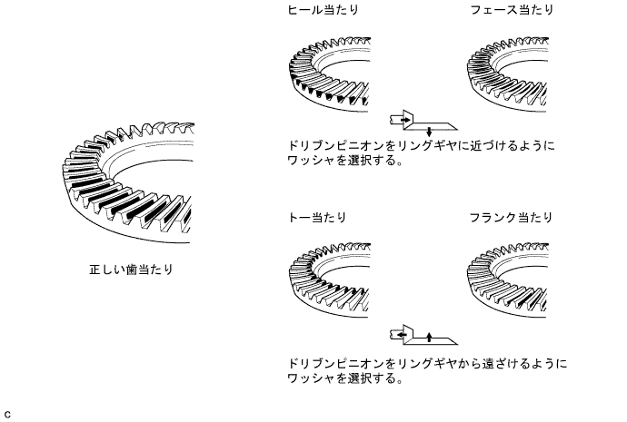
If there is face contact or flank contact, perform the following.
Adjust by moving the ring gear using transfer ring gear mounting case washer No.2 (for preload adjustment) and the ring gear mounting case washer (for backlash adjustment).
For heel contact and toe contact, perform the following procedure.
Select a transfer output shaft washer (for tooth contact adjustment) from the table, and adjust by moving the driven pinion.
| Part No. | Thickness [mm] | Identification Mark |
|---|---|---|
| 36275-52010 | 1.02 | 01 |
| 36275-52020 | 1.04 | 02 |
| 36275-52030 | 1.06 | 03 |
| 36275-52040 | 1.08 | 04 |
| 36275-52050 | 1.10 | 05 |
| 36275-52060 | 1.12 | 06 |
| 36275-52070 | 1.14 | 07 |
| 36275-52080 | 1.16 | 08 |
| 36275-52090 | 1.18 | 09 |
| 36275-52100 | 1.20 | 10 |
| 36275-52110 | 1.22 | 11 |
| 36275-52120 | 1.24 | 12 |
| 36275-52130 | 1.26 | 13 |
| 36275-52140 | 1.28 | 14 |
| 36275-52150 | 1.30 | 15 |
| 36275-52160 | 1.32 | 16 |
| 36275-52170 | 1.34 | 17 |
| 36275-52180 | 1.36 | 18 |
| 36275-52190 | 1.38 | 19 |
| 36275-52200 | 1.40 | 20 |
| 36275-52210 | 1.42 | 21 |
| 36275-52220 | 1.44 | 22 |
| 36275-52230 | 1.46 | 23 |
| 36275-52240 | 1.48 | 24 |
| 36275-52250 | 1.50 | 25 |
| 36275-52260 | 1.52 | 26 |
| 36275-52270 | 1.54 | 27 |
| 36275-52280 | 1.56 | 28 |
If the tooth contact has been adjusted, perform the backlash inspection, preload inspection and tooth contact inspection again.
| 18. Install Transfer Case Straight Pin |
Using a plastic hammer, install the straight pin in the position shown in the illustration.
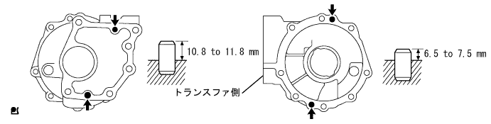
| 19. Install Correctly |
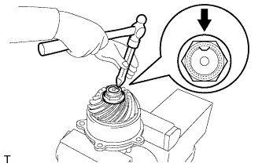 |
Using a chisel and hammer, stake the pinion gear nut.
Install the output shaft to the transfer case with the 5 bolts.
Install transfer case cover No.1.
Using a scraper and wire brush, clean off the seal packing adhering to the transfer case and transfer case cover No.1, and then remove any oil with cleaning solvent or equivalent.
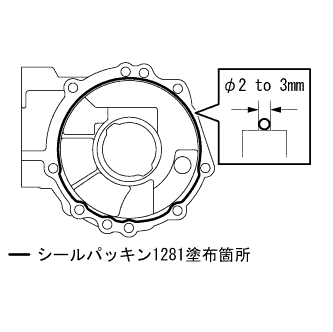 |
Apply seal packing 1281 continuously in a bead (diameter 2-3 mm) to the transfer case in the position shown in the illustration.
Install transfer case cover No.1 with the 8 bolts.
| 20. Install Transfer Case Oil Seal |
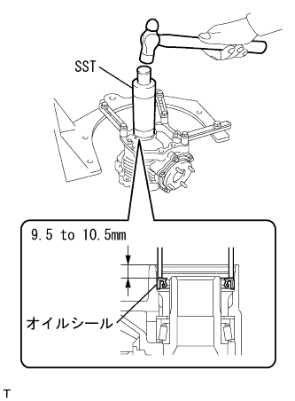 |
Using SST and a hammer, tap in a new oil seal to the standard depth.
Apply a thin coat of MP grease No.2 to the lip of the oil seal.
| 21. Install Transfer Case Oil Seal RH |
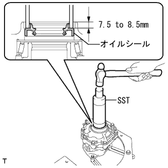 |
Using SST and a hammer, tap in a new oil seal to the case until it reaches the specified depth.
Apply a thin coat of MP grease No.2 to the lip of the oil seal.
| 22. Install Transfer Case Plug NO.2 |
 |
Using a 10 socket hexagon wrench, install transfer case plug No.2 (filler plug) with a new gasket.
| 23. Install Transfer Drain Plug |
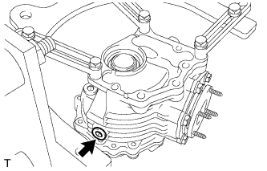 |
Using a 10 socket hexagon wrench, install the transfer drain plug with a new gasket.
| 24. Install Transfer Case Plug NO.1 |
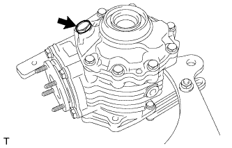 |
Install transfer case plug No.1 with a new gasket.
| 25. Remove Transfer Assembly |
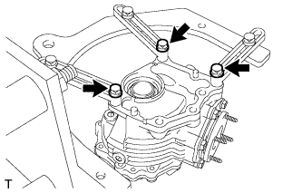 |
Remove the transfer assembly from the overhaul attachment.
| 26. Install Transfer & Transaxle Setting Stud Bolt |
Install the 4 stud bolts to the transfer case in the positions shown in the illustration.
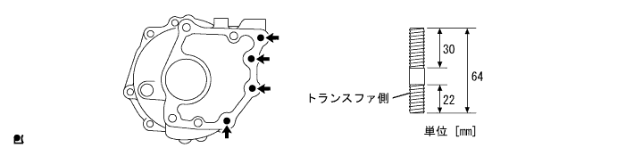